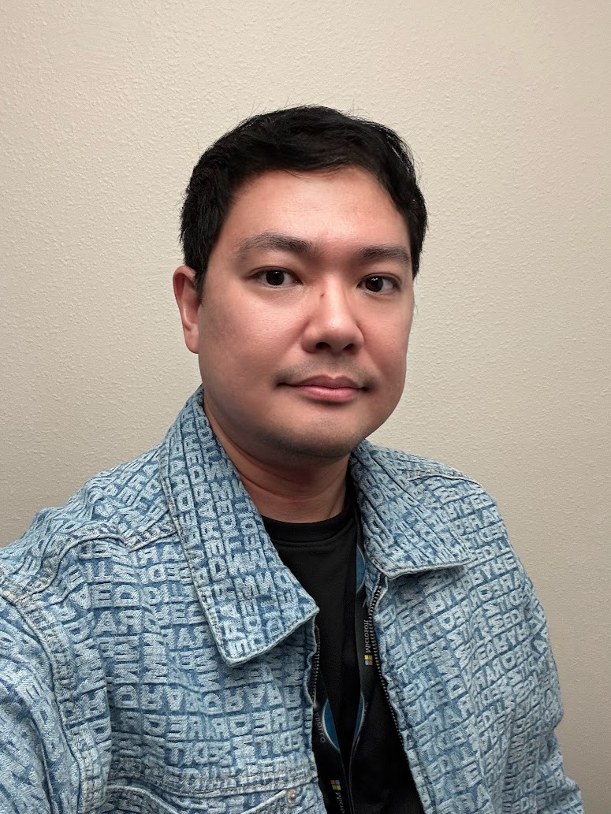

A versatile technology and operations professional shaped by experience in business ownership, hospitality, education, HR, logistics, web development, data science, AI safety, and public-sector healthcare. I bring a builder's mindset, cross-cultural communication, and analytical discipline to create solutions that work for people, organizations, and communities.

I aspire to lead teams with purpose, turn ambitious plans into disciplined execution, and create an environment where people can do their best work. Success is not only delivering results—it is building trust, developing others, and achieving meaningful progress together.